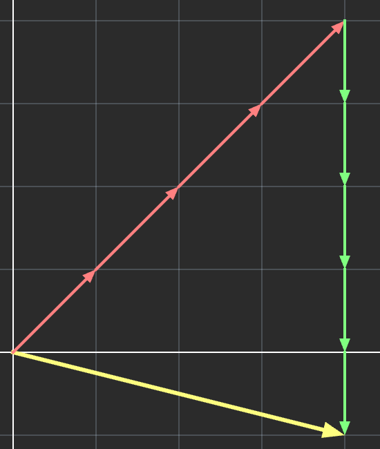

In this section, we'll look at some of the properties of \(\mathbb{R}^n\) vector spaces.
In particular, we'll look at bases, linear independence, span, dimension,
and how they all relate.
We'll also briefly talk about vector subspaces.
Overview
Since the highlight of this section is on vector bases, we'll spend the most time explaining these.
Recall from section #2, we can write a vector as a sum of its components.
\(
\begin{bmatrix}4 \\ -1\end{bmatrix} =
\begin{bmatrix}4 \\ 0\end{bmatrix} +
\begin{bmatrix}0 \\ -1\end{bmatrix}
\)
Let's build on this by breaking these components down into a scalar value and vector which is all
zeros except for a value which is a 1.
\(
\begin{bmatrix}4 \\ -1\end{bmatrix} =
4\begin{bmatrix}1 \\ 0\end{bmatrix} -
1\begin{bmatrix}0 \\ 1\end{bmatrix}
\)
This works for any vector in \(\mathbb{R}^n\) space:
These 'all zeros except a one' vectors are part of the standard basis. Elements of a basis are
called basis vectors.
We can think of these basis vectors as the base units of a vector space. Every other vector
in the vector space can be produced using them.
Each standard basis vector is a normalized vector facing in the positive direction of a
coordinate axis.
For 2-3 dimensions, we represent these standard basis vectors with the variables \(\hat{i}\),
\(\hat{j}\), and \(\hat{k}\).
Linear Combinations
Vectors which are produced using only vector addition and scalar multiplication are callled
linear combinations.
As we saw before, every vector in \(\mathbb{R}^n\) space is a linear combination of
these standard base units (standard basis vectors).
Here are some visual examples of different vectors represented as linear combinations of the
standard basis vectors:
Non-Standard Vector Bases
Now, remember how the basis vectors we picked were somewhat arbitrary.
There's no reason why we couldn't pick something other than \(\begin{bmatrix}1 & 0\end{bmatrix}\)
and \(\begin{bmatrix}0 & 1\end{bmatrix}\):
What if we picked different basis vectors, like \(\begin{bmatrix}2 & 0\end{bmatrix}\) and
\(\begin{bmatrix}0 & 2\end{bmatrix}\) instead?
\(
\begin{bmatrix}4 \\ -1\end{bmatrix} =
2\begin{bmatrix}2 \\ 0\end{bmatrix} -
0.5\begin{bmatrix}0 \\ 2\end{bmatrix}
\)
What if we picked \(\begin{bmatrix}1 & 1\end{bmatrix}\) and \(\begin{bmatrix}0 & 1\end{bmatrix}\)?
\(
\begin{bmatrix}4 \\ -1\end{bmatrix} =
4\begin{bmatrix}1 \\ 1\end{bmatrix} -
5\begin{bmatrix}0 \\ 1\end{bmatrix}
\)
Vector Bases Examples
These are examples of a non-standard basis, or just generally a basis.
A vector space can have multiple bases, and for a standard R^n vector space, there are in fact infinitely
many of them.
For the basis containing \(\begin{bmatrix}1 & 1\end{bmatrix}\) and \(\begin{bmatrix}0 & 1\end{bmatrix}\),
our linear combination examples from before would look like this:

Although we changed our base units, every vector in the vector space can still be written as linear combinations of them.
Linear Independence
Essentially what we've learned is that every element of a vector space is a linear combination of its basis vectors.
What if in our previous \(\mathbb{R}^2\) examples of bases we had more than just two basis vectors?
Ex. \(\begin{bmatrix}0 & 1\end{bmatrix}\), \(\begin{bmatrix}1 & 0\end{bmatrix}\), and \(\begin{bmatrix}1 & 1\end{bmatrix}\)
The problem now is that vectors are a linear combination of the basis in multiple distinct ways:
We want a basis to be the simplest vector set which generates the vector space.
Because of this, one of the requirements of a basis is that it has to be linearly independent. Every vector in
the basis has to not be a linear combination of the other basis vectors.
In the previous example, \(\begin{bmatrix}1 & 1\end{bmatrix}\) can be written as \(\begin{bmatrix}1 & 0\end{bmatrix}\) +
\(\begin{bmatrix}0 & 1\end{bmatrix}\) making the basis linearly dependent.
Linear Independence Examples
This set is linearly dependent.
Linearly independent vectors can't
be parallel to each other as one
vector is just a scaled version of
the other.
This set is linearly independent.
Individually, each vector can only
produce combinations parallel to
themselves. One vector can't be
used to create the other.
This set is linearly dependent.
Even though none of the vectors
are parallel to each other, one
can still be written as a linear
combination of the others.
Linear Span
The linear span (or just span) of a set of vectors is basically every linear combination we
can make using that initial set.
For example:
The span of the standard basis